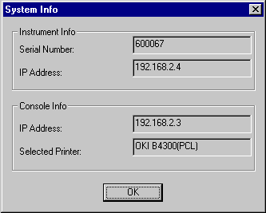
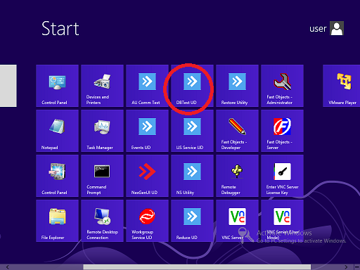
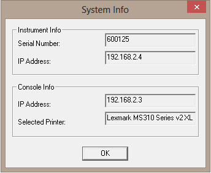
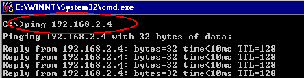

Pinging AU
This procedure describes how to ping the AU and identify the IP address that the system software will use to communicate with the AU.
-
Identify the IP address that the system software will use to communicate with the AU.
For Windows XP:
- Press the [Windows] key.
- Select Start > Programs > NexGen > dbTestUDThe dbTest will open; but only after the system software is successfully installed.
-
Select
System Info in the DbTest window to display the console IP address and the IP address that is expected for the AU.
Note:
- The AU IP address that is listed is the address that was stored in the PC registry and is not necessarily the actual address of the instrument.
- If the address listed does not match the actual address, then the user interface will not be able to communicate with the AU.
- The entry can be edited using regedit or the Reconfigure workgroup server option of the Restore Utility.
- The address is stored in the PC registry at HKEY_LOCAL_MACHINE > Software > Beckman > Nexstep > Workgroup > AuIp.
- In order for the user interface to accept messages from the AU, the address must also agree with the entry stored in the NexStepBase database. Refer to the Software: Clearing Jammed Critical Events procedure.

-
Select
OK to close the
System Info window, and then exit
dbTest.
For Windows 8:
-
Press
Windows key, open
DBTest UD icon.

-
Select
System Info in the DBTest window to display the console IP address and the IP address that is expected for the AU.

Note:- The AU IP address that is listed is the address that was stored in the PC registry and is not necessarily the actual address of the instrument.
- If the address listed does not match the actual address, then the user interface will not be able to communicate with the AU.
- The entry can be edited using regedit or the Reconfigure workgroup server option of the Restore Utility.
- The address is stored in the PC registry at HKEY_LOCAL_MACHINE > Software > Beckman > Nexstep > Workgroup > AuIp.
- In order for the user interface to accept messages from the AU, the address must also agree with the entry stored in the NexStepBase database. Refer to the Software: Database - Clearing Jammed Critical Events procedure.
- Select OK to close the System Info window, and then exit DBTest.
-
Ping the AU.
For Windows XP:
- Select the [Windows] key, and then select Start > Run to open a run dialog box on the console.
-
Enter
cmd and select
OK.

-
In the
CMD window, enter
ping 192.168.2.4, and then select
Enter.
Note:
- The instrument IP address is normally 192.168.2.2 for a new AU, and 192.168.2.4 for an AU with DxI software installed.
- The console PC IP address is normally 192.168.2.1 for a new PC and 192.168.2.3 for a PC with DxI software installed.
- Try pinging 2.1 through 2.10, if not successful at 2.4. or 2.2.

-
Verify that the PC receives a reply from the AU.
Note:
- If a Destination Host Unreachable message is displayed, then check that the IP address was entered correctly.
- For Windows XP consoles not connected to a working network, an error message of Destination Host Unreachable is generated when pinging any address (even the address of the PC).
- If the AU and PC are given the same IP address, then there is a network conflict and no communication occurs. To resolve the conflict, change the PC IP address to 2.1, reboot the instrument and the PC, and then ping addresses 1 to 10 again. Refer to the configuring network settings section of the Peripherals: Replacing Console PC or PC Hard Drive.
- The network connection on the PC is near the mouse connector. The dual NIC ports on the PC are for the RMS and LAS and do not work for the AU connection.
- The DxI instrument has two network connectors, identified as PC and UCTA. If unsure of the port, try both, connect to the spare port on the underside of the SPU, or connect directly to the AU hub.
For Windows 8:
-
Press
Windows key, open the
Command Prompt icon or type
command prompt and open the program.

-
In the CMD window, enter
ping 192.168.2.4, and then select Enter.
Note: For Windows 8, the default console IP address is 192.168.2.3 and the AU IP address is 192.168.2.4. Neither IP address changes during the software load process.

-
Verify that the PC receives a reply from the AU.
Note:
- If a Destination Host Unreachable message is displayed, then check that the IP address was entered correctly.
- For Windows 8 consoles not connected to a working network, an error message of Destination Host Unreachable is generated when pinging any address (even the address of the PC).
- If the AU and PC are given the same IP address, then there is a network conflict and no communication occurs. To resolve the conflict, change the PC IP address to 2.1, reboot the instrument and the PC, and then ping addresses 1 to 10 again. Refer to the configuring network settings section of the Peripherals: Replacing Console PC or PC Hard Drive.
- The network connection on the PC is located between the USB 3.0 connections and the Video connection. The dual NIC ports on the PC are for the RMS and LAS and do not work for the AU connection. Refer to Console PC Connector Identification (DxI and Access2) or Installing DxI Instrument procedures for the PC diagram.
- The DxI instrument has two network connectors, identified as PC and UCTA. If unsure of the port, try both, connect to the spare port on the underside of the SPU, or connect directly to the AU hub.